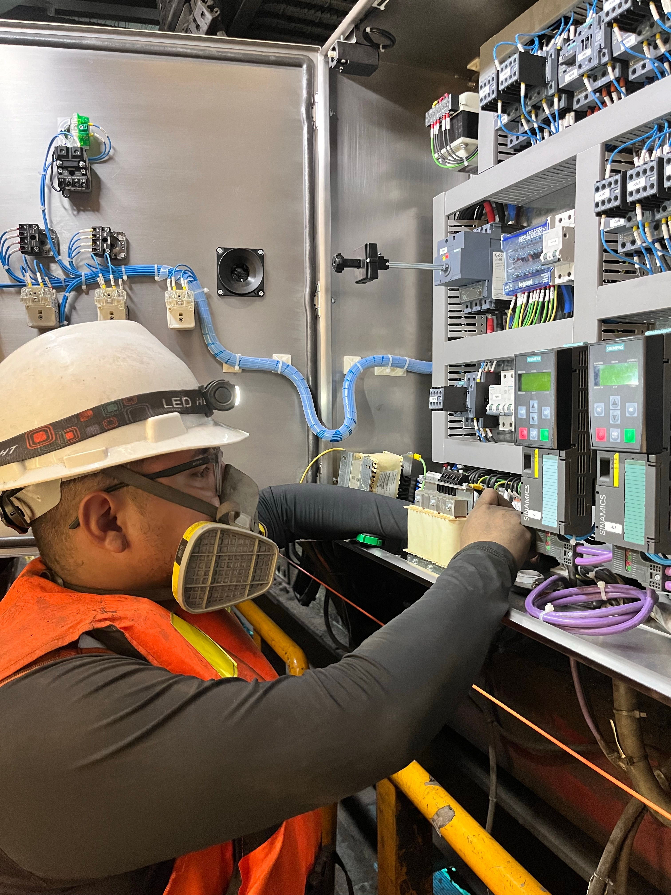

Mantenimiento Industrial
¿Qué es el mantenimiento industrial?
Es el conjunto de actividades técnicas y administrativas destinadas a conservar los equipos, maquinaria e instalaciones en condiciones seguras y óptimas de funcionamiento. En nuestra empresa manufacturera, asegura que las inyectoras, compresores y sistemas de enfriamiento no fallen inesperadamente.
Tipos de Mantenimiento
- Mantenimiento correctivo: Consiste en reparar o cambiar una pieza únicamente después de que esta se ha roto o la máquina se ha detenido.
- Mantenimiento preventivo: Se realiza de manera programada (por horas de uso o fechas) para cambiar piezas desgastadas y lubricar sistemas antes de que ocurra una falla.
- Mantenimiento predictivo: Utiliza sensores y análisis de datos (vibraciones, temperatura) para predecir cuándo va a fallar un componente y cambiarlo en el momento exacto.
Consecuencias de las paradas inesperadas
Cuando una máquina se detiene sin aviso, el proceso productivo se frena. Esto ocasiona pérdida de materia prima (el plástico fundido puede arruinarse dentro de la máquina), pago de horas extra al personal inactivo, estrés organizativo e incumplimiento con las fechas de entrega a los clientes.
Ejemplos de mantenimiento aplicado
- Cambio periódico de filtros de aceite y revisión de niveles en las inyectoras (Preventivo).
- Uso de cámaras termográficas para detectar sobrecalentamientos en los tableros eléctricos (Predictivo).
- Reemplazo de una banda transportadora que se rompió sorpresivamente durante el turno nocturno (Correctivo).

Comparativa de Mantenimiento
| Tipo | Características | Ejemplo |
|---|---|---|
| Correctivo | Reactivo, costoso a largo plazo, alto riesgo de paro. | Reparar un motor quemado. |
| Preventivo | Planificado, rutinario, reduce averías graves. | Lubricación semanal de engranajes. |
| Predictivo | Tecnológico, requiere monitoreo, altamente eficiente. | Análisis de vibraciones en rodamientos. |